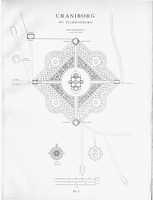
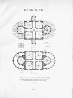
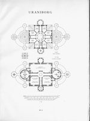
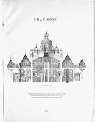
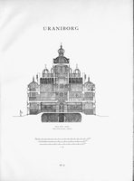
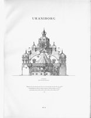
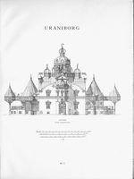
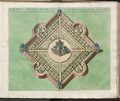
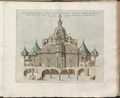
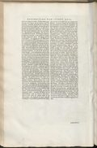

Uraniborg — Tycho's house and observatory, 1576–1597
ruinedA1576–1580 · Ven (Hven)site-uraniborgTycho's great house, built 1576–1580 ön a square rampart-enclosed plot whose four corners pointed to the compass points, with four roads running from those corners to the raised circular space at the centre where the house stood. The central building was a square 49 feet ön a side, with round towers 18 feet in diameter ön its north and south faces (ringed by lower outhouses för fuel) and narrow entrance towers east and west; it was built apparently of red brick with sandstone ornaments in the 'Gothic Renaissance' style then new to the North — epoch-making, Dreyer judged, in the history of Scandinavian architecture. A single building uniting residence, library and upper observatory galleries above än alchemical laboratory in the basement. Its artistic genesis is still debated — advisers proposed from Hans van Paeschen (first builder of Kronborg) to the royal sculptor Johan Gregor van der Schardt — but the 1587 tablet in the great mural-quadrant painting names Tycho himself 'the constructor of the buildings and the astronomical instruments', and the domed-centre-in-a-geometric-garden plan shows a strong affinity with Italian villa architecture, especially Palladio's Villa Rotonda (Johannsen, in Tycho Brahes Verden, 2006). The standard art-historical monograph ön the building — Jern's Uraniborg: herresäte och himlaborg (Lund, 1976) — locates the specific model för the gabled façade not in the villa tradition but in Venetian church fronts, comparing it directly with S. Giovanni in Bragora and S. Maria della Carità, while cautioning that Uraniborg cannot be reduced to any single Renaissance style-circle (Jern 1976). The documented hands are these: the Netherlandish master-builder Hans von Paschen led the work before transferring to Bohus in 1577; Hans van Stenwinkel the Elder completed the interior and built Stjerneborg (royal architect, 1582); the Nuremberg founder Georg Labenwolf laid the lead-pipe water system and fountain; and Tobias Gemperlin painted the great mural quadrant (Jern 1976). Over its two doors Tycho set paired mottoes that made the building's double programme explicit — Suspiciendo despicio ('by looking up I look down') över the eastern, astronomical portal, and Despiciendo suspicio ('by looking down I look up') över the western, alchemical one — so that astronomy and the laboratory's 'terrestrial astronomy' answered each other across the house (Jern 1976). In his own words, Tycho chose “the site highest ön this island … practically in its centre, where I started building from its foundations a castle which was named after the heaven itself in which it was its task to make observations, and hence called Uraniborg.” He gives the rampart-square as three hundred feet ön a side, the central house as “nearly sixty feet” per side under a forty-five-foot wall, and seventy-five feet “from the ground to the Pegasus at the very top” (Mechanica, trans. Ræder, Strömgren & Strömgren 1946, p. 126). These figures are in Tycho's short foot of 259 mm, so the house is ≈15.5 m square — consistent with the 49-foot figure (in the larger Danish foot) recorded above. The foundation stone was laid on 8 August 1576 by Charles de Dançay (b. 1509 near Poitiers, d. 1589), the French envoy, in the south-east corner, 'when the rising Sun together with Jupiter was in the heart of Leo, while the Moon was in the western heavens in Aquarius'; a fragment of the porphyry stone found early in the twentieth century in the wall of a house on the island reads FOELICIS AVSPICII ERGO / ANNO MDLXXVI / KA.AVGVSTI P. — the first of August, not the eighth: the 1996 editors suggest the date was cut on the stone for 1 August and the ceremony then put back a week to catch the favourable aspect (Hadravová, Hadrava & Shackelford 1996, pp. 147–148, nn. 260–262). The same edition notes (n. 258) that a thorough archaeological exploration of Hven begun in 1988 was providing what a reconstruction of the buildings and of Tycho's gardens needed, and that the first part of the garden was opened in 1992.
Dimensions. central building a square of 49 feet per side; round towers 18 feet in diameter on the north and south sides; narrow entrance towers east and west (Dreyer, p. 96, from Tycho's own Epistolae astronomicae p. 218 + Mechanica fol. H.4)
Fate. decay documented from Tycho's departure — royal commissioners Thomas Fincke and Iver Stub were sent on 2 June 1597 to inspect the damage the Hven tenants had done to the instruments still on Uraniborg (KB 1596–1602 p. 163); by June 1602 the buildings were reported 'meget forfalden' and surveyed for the new lensmand Cort Barleben (KB p. 746). Demolished and quarried in the 17th century; only foundations survive, partly restored
Instruments here
See it
Measured reconstruction — Christensen 1921the primary architectural record
Charles Christensen's measured reconstruction (1921) is the authoritative modern record of how Uraniborg actually looked. It rests on C. V. L. Charlier's 1901 excavation of the foundations, collated against — and correcting — every depiction printed in Tycho's own lifetime.


Plan of the whole site (Tavle 1)


Ground floor & basement (Tavle 2)


Upper storeys (Tavle 3)


Section looking west (Tavle 4)


Section looking south (Tavle 5)


South façade (Tavle 6)


East façade (Tavle 7)
Excavation. C. V. L. Charlier excavated the foundations in 1901. The recovered ground-plan does not agree with the plans Tycho himself printed (which are wrong “end ikke i de store Hovedtræk” — not even in the main outlines); the reconstruction therefore follows the excavated measurements, not the printed figures. What Charlier actually recorded (1901, pp. 5, 7–9): the east and west foundation walls of the square well preserved, standing half a metre and in places more than a metre above the basement floor, the square measuring 1430 cm east–west and 1445 cm along the east wall — against Tycho's 60 pedes a foot of 23.8 cm (d'Arrest had 25.4 cm, Picard 31.6); the south wing's outer wall as a segment of a circle 910 cm north–south by 1300 cm east–west, with no trace of the inner circular wall; in the north wing part of the inner wall, cylindrical, 6 m across, with Tycho's well at its centre, still in use; the south-east cellar cleared by Ekdahl in 1823 (280 by 285 cm, its floor 2 m below the basement), which he was inclined to take for the castle prison; and no trace of the fountain. The plans were drawn by Landskrona's city architect Fredrik Sundbärg and E. F. Larsson (p. 5). Of the library rotunda itself, then, the ground preserved nothing but the outer ambulatory wall.
| Measure | Marburg / Braunius woodcuts | Tycho's own writings |
|---|---|---|
| Side of the residential square | 50 ft | 60 ft |
| Wall height | 40 ft | 45 ft |
| Round towers, inner diameter | 20 ft | 22 ft |
| Ambulatory width | 9 ft | 10 ft |
| Portal-projection side | 14 ft | 15 ft |
| Height to the weather-vane | 70 ft | 75 ft |
| Cellar depth | 12 ft | 12 ft (the only agreement) |
The printed sources disagree on almost every dimension; the reconstruction uses the excavated measurements. Feet are Tychonic feet.
Surviving relics
• Foundation-stone fragment (porphyry, with Charles Dançay's Latin inscription; the stone reads 1 August, where the Mechanica gives 8 August 1576) — Lund University Historical Museum (Fig. 1)
• Window-crown fragment (volute-crowned, the motif peculiar to Uraniborg) — Lund University Historical Museum (Fig. 5)
• Two Arion-on-a-dolphin bronze water-taps from the piped water system — Lund University Historical Museum (Fig. 26)
• Oak column capital from Uraniborg (‘søjlekapitælet i eg fra Uraniborg’) — from Harald Mortensen's collection, his gift of 1950; which building element it came from, and the chain from Hven to Mortensen, are unrecorded (the museum, September 2026, confirms only the object and its number) — Det Nationalhistoriske Museum på Frederiksborg, inventory B3954, in store
Design source. The design adapts Palladio's Villa Rotonda (known via the engraving in I quattro libri dell'architettura, 1570): Uraniborg keeps the square plan and the four axial corridors but drops the central circular domed hall (impractical in a Nordic house), substitutes octagonal portal-projections for the open loggias, and adds the two round towers N and S. Vitruvian symmetria — invoked by Tycho in the Mechanica's description of the east front, after the architectural learning he had professed since his 1574 oration — governs the whole; the volute window-crowns follow Serlio, the timber cupola Walter Rivius's German Vitruvius (1548). [Jern 1976 later relocates the façade source from the Veneto villa to Venetian church fronts — a competing attribution.]
Rooms and chambers (17)
Basement
The great alchemical laboratory. Sixteen furnaces of nine kinds in the south projection; one furnace-base was recovered in the 1901 excavation.
The well cellar. The masonry well (about 40 alen deep) under the north tower that fed the pressurised water system; still extant.
Ground floor
The central crossing and fountain. Where the four axial corridors meet, with a water-spouting Vandkunst at the centre.
Vinterstue (the winter room). The family living-room (SE); later enlarged, with a hidden five-furnace spagyric laboratory built behind its chimney.
The mural-quadrant room. The SW ground-floor room: the great brass mural quadrant on the meridian wall (its west window blinded, a slit cut in the south wall), and above the arc the 1587 trompe-l'oeil wall-painting of Tycho in effigy.
The guest rooms. Two further ground-floor chambers, each with a fireplace and beds; the NE one opened to the kitchen.
The kitchen. In the north tower, around the masonry well.
Tower rooms
The library and museum. The study in the south tower: the library, the great brass globe behind a central column, four tables for the students, and the painted portrait boards.
Second storey
The Blue Chamber. In the earliest (Marburg/Braunius) captions, the Queen's Chamber.
The Red Chamber. In the earliest captions, the King's Chamber — the names later dropped.
The Yellow Chamber. The octagonal room in the portal projection.
Sommerstue (the Green Room). The west room, with a painted plant ceiling and a view over the Sound.
Observatories
The great southern observatory. Atop the south tower.
The great northern observatory. Atop the north tower; later the display place of Copernicus's own parallactic rules.
Loft and cupola
The attic and cupola. Eight cramped student cells; above them the cupola with the clock and the gilt Pegasus weather-vane.
Joan Blaeu, Grooten Atlas (Amsterdam, 1664) — the inherited print tradition
After Tycho’s own Mechanica and Epistolae views — schematic and unreliable in architectural detail; compare the measured reconstruction above.


Design of the Castle of Uraniborg, built by Tycho Brahe, Lord of Knudstrup, on the island of the Danish Hellespontus Hven, as to its total capacity


Elevation of the principal building of Uraniborg on the Danish island of Venusia, or Hven, built ca. 1576 by Tycho Brahe for the restoration of astronomy


Floor plan of the house of the Castle of Uraniborg
Sources
Christianson, On Tycho's Island (2000)Biographical Encyclopedia of Astronomers (2007)Dreyer, Tycho Brahe (1890)Tycho Brahes Verden (Nationalmuseet, 2006)Jern, Uraniborg: herresäte och himlaborg (Lund, 1976)Ræder, Strömgren & Strömgren, Tycho Brahe's Description of his Instruments (1946)Beckett & Christensen, Uraniborg og Stjærneborg (1921)Hadravová, Hadrava & Shackelford, Instruments of the Renewed Astronomy (1996)Museernes Samlinger (samlinger.slks.dk)Charlier, Utgräfningarna af Tycho Brahes observatorier på ön Hven sommaren 1901 (Lund 1901)